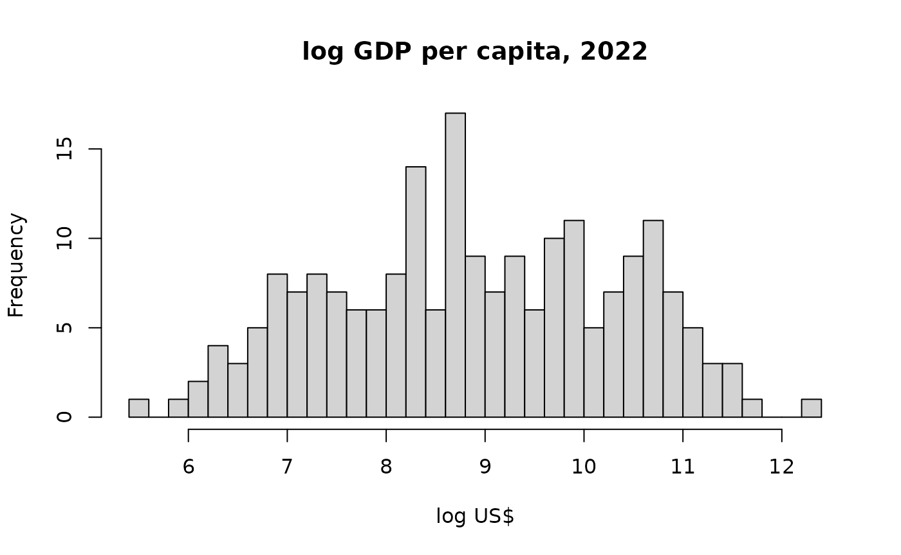

Univariate mixture clustering with the DPM engine
Source:vignettes/mixClust-univariate.Rmd
mixClust-univariate.RmdThis vignette demonstrates Bayesian univariate Gaussian mixture
clustering with nimix’s Dirichlet Process Mixture (DPM)
engine, built on NIMBLE’s Chinese Restaurant Process
(dCRP), using official statistics: the
wdi2022 dataset shipped with the package (World Bank World
Development Indicators, 2022, CC BY 4.0; see ?wdi2022). The
same workflow applies directly to other official-statistics sources,
e.g. BPS regional indicators.
MCMC chunks use
eval = FALSEso the vignette builds quickly under CRAN time limits; the printed results below are from an actual run. Run the chunks interactively to reproduce them.
The data: national income across 207 countries
GDP per capita is famously multimodal on the log scale – countries group into latent “development regimes” rather than forming one homogeneous population.
library(nimix)
#> Loading required package: nimble
#> nimble version 1.4.2 is loaded.
#> For more information on NIMBLE and a User Manual,
#> please visit https://R-nimble.org.
#>
#> Attaching package: 'nimble'
#> The following object is masked from 'package:stats':
#>
#> simulate
#> The following object is masked from 'package:base':
#>
#> declare
data(wdi2022)
ly <- log(wdi2022$gdp_pc)
summary(ly)
#> Min. 1st Qu. Median Mean 3rd Qu. Max.
#> 5.574 7.766 8.806 8.893 9.984 12.275
hist(ly, breaks = 30, main = "log GDP per capita, 2022", xlab = "log US$")
Fit: how many income regimes?
method = "dpm" estimates the number of occupied
components. K_max is only a truncation level (computational
headroom), not a prior belief about K.
fit <- nimixClust(ly, K_max = 10,
mcmcControl = list(niter = 4000, nburnin = 1500),
seed = 1)
fit <- relabel(fit) # always relabel before summarising (label switching)
summary(fit)On the 2022 data this finds a two-regime structure:
#> modalK = 2
#> weight mu_mean
#> 1 0.554 7.966 # ~ US$ 2,900 (lower/middle-income regime)
#> 2 0.446 9.964 # ~ US$ 21,000 (high-income regime)The posterior on the number of clusters concentrates on 2-3, with the
usual DPM tail of small transient components. If the fit warns that the
truncation level was reached in a non-negligible share of iterations,
increase K_max and re-run – a larger truncation only adds
headroom.
Multi-chain convergence check
Multiple chains from dispersed starts cost almost nothing extra: the
compiled model is reused across chains, and summary() then
reports cross-chain split-Rhat / ESS on label-invariant quantities.
fit3 <- nimixClust(ly, K_max = 10,
mcmcControl = list(niter = 4000, nburnin = 1500,
nchains = 3),
seed = 1)
summary(relabel(fit3))Sanity check with a fixed K
method = "fixedk" fits a classic finite mixture with
known K – useful as a baseline or for model comparison across a few K
values.
fit2 <- nimixClust(ly, K = 2, method = "fixedk",
mcmcControl = list(niter = 4000, nburnin = 1500),
seed = 1)
summary(relabel(fit2))